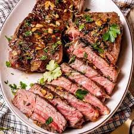

Steak
This dish is a regional favorite, It is the most popular meal among men
This dish is also well known around the world
- 2 pound Ribeye steak
- 1 sprig Thyme
- 1 Onion browned
- 2 tbl Butter
- Preheat a skillet to very hot
- Lay the steak slowly into the pan and leave undisturbed for 3 minutes
- Turn and cook for a further 3 minutes
- Serve the steak with the butter thyme and onion